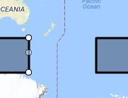

Troubleshooting
Why aren't there many results?
To keep the search interface lightweight and fast, only the first 1000 results are drawn on the screen. There may be more hits in a given area, but they may not be drawn by the interface - this is to improve performance and keep the searches working in real-time. The total number of results is displayed below the Export Results button. It is best to refine the search to get fewer than 1000 results.
Why is the quicklook image the wrong orientation?
This is a known issue and has been brought from the ESA (European Space Agency) archive. There is no fix at this time. In the future a solution may be explored.
Why is it taking so long to load?
The results have been limited to 1000 to help with rendering performance but speed is dependant on your internet connection and the speed of your computer. If it appears that the page is stuck, load time > 20 seconds, refreshing the page will usually snap it back.
Where is the rectangle tool?
There has been one instance where the rectangle tool and map key were rendered below the map. This indicates that the styling has not loaded properly.
This can be fixed by performing a hard refresh using Shift + F5 or Shift + Click Refresh in browser.
Strange behaviour near the date line?
Due to the spherical nature of the earth, there are strange behaviour when it comes to searching over the date line. If your view window is over the date line, the search will always draw east. This behaviour is easiest seen using the rectangle search tool.

The box has been drawn from top left, over the date line to bottom right. The area I drew has not been selected but the rectangle has been drawn east almost 360 degrees. The image below is a southern hemisphere capture of the same drawing.